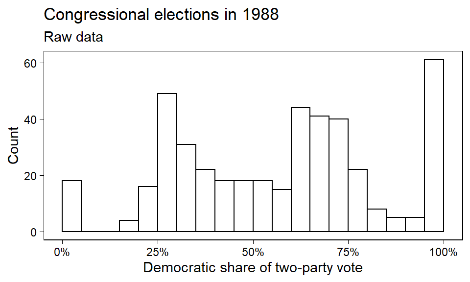
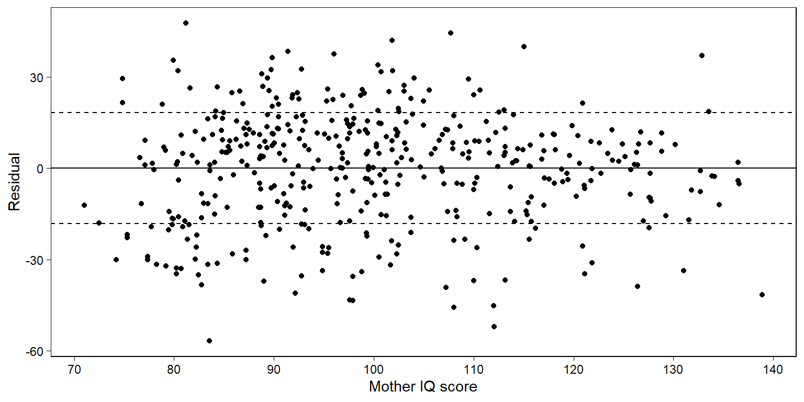
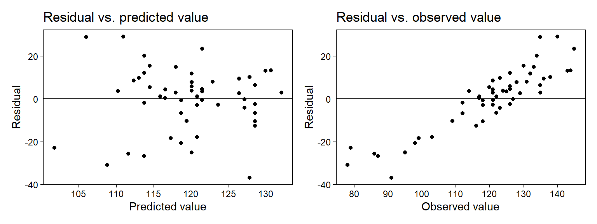

Chapter 5 Simulation
확률변수의 시뮬레이션은 다음과 같은 이유에서 응용통계에서 중요하다. 첫째, 우리는 현실세계에서 나타나는 여러 가지 변이 양상들(variation)을 모방하는 확률모델을 사용하며, 시뮬레이션 도구들은 어떻게 이러한 변이 양상들이 작동하는지에 대해 더 잘 이해할 수 있도록 돕는다. 둘째, 시뮬레이션을 이용해서 데이터의 표집분포(sampling distribution)에 근사한 결과를 확인할 수 있고, 그 결과는 통계적 추정량과 절차의 표집분포를 살펴보는 데 활용할 수 있다. 셋째, 회귀모델은 확률적이다(not deterministic; 결과가 정해져 있는 것이 아니다). 즉, 회귀모델의 결과는 확률적 예측을 생산한다. [따라서] 시뮬레이션은 예측에 잇어서의 불확실성을 보옂루 수 있는 가장 편리하고 일반적인 방법이다.
5.1 Simulation of discrete probability models
5.1.1 How many girls in 400 births?
여자아이일 확률이 약 48.8%, 남자아이일 확률이 약 51.2%고 전세계적으로 이 확률은 고정되어 있다고 하자. 이때, 한 병원에서 특정 연도에 태어난 400명의 아이들이 있다고 할 때, 그 아이들 중에서 여자아이들은 몇 명일까? Gelman, Hill, and Vehtari (2020, 69) 는 이항분포를 이용해서 400명의 출생아이들에 대한 시뮬레이션을 수행한다.
n_girls <- rbinom(1, 400, 0.488) # 이항분포에서 무작위로 추출
print(n_girls)## [1] 205위의 결과는 400명의 출생아에 대해서 발생할 수 있는 가능성을 보여준다. 실제로 “일어날 수 있는 분포”를 얻기 위해서, 우리는 이 과정을 1,000번 반복하는 시뮬레이션을 수행한다.
n_sims <- 1000 # 시뮬레이션 횟수 지정
n_girls <- rep(NA, n_sims) # 시뮬레이션 결과를 담을 깡통
for (s in 1:n_sims){ # 1부터 시뮬레이션 횟수까지 반복
n_girls[s] <- rbinom(1, 400, 0.488) # 깡통, n_girls의 각 요소에
} # 1000번의 결과를 각각 저장
n_girls %>% as_tibble() %>%
ggplot(aes(x = value)) +
geom_histogram(
color = "black", fill = "white") +
labs(x = "n_girls", y = "Frequency") +
theme_bw()Figure 5.1: Histogram of 1000 simulated values for the number of girls born in a hospital from 400 births, as simulated from the model that includes the possibility of twins.
Figure 5.1의 1000회 시뮬레이션은 모집단으로부터 표본을 추출하면서 존재할 수 있는 불확실성을 포착한다. 위에서는 loop 함수를 이용했지만 replicate 함수를 이용해서 시뮬레이션을 할 수도 있다.
5.1.2 Accounting for twins
모델은 다양한 방식으로 확장할 수 있다. 예를 들어, 이란성 쌍둥이를 낳을 확률이 1/125이고 이때, 쌍둥이 중 하나가 여자아이일 확률이 약 49.5%라고 하자. 일란성 쌍둥이를 낳을 확률은 1/300이고, 이 쌍둥이가 여아 쌍둥이일 확률은 약 49.5%라고 할 때, 400명의 출생을 대상으로 시뮬레이션을 할 경우 아래와 같다.
birth_type <-
sample(c("fraternal twin","identical twin","single birth"),
size=400, replace=TRUE,
# Pr(이란성), Pr(일란성), Pr(단일출생)
prob=c(1/125, 1/300, 1 - 1/125 - 1/300))
girls <- rep(NA, 400)
for (i in 1:400){
if (birth_type[i]=="single birth") {
girls[i] <- rbinom(1, 1, 0.488)
} else if (birth_type[i]=="identical twin") {
girls[i] <- 2*rbinom(1, 1, 0.495) # 일란성이므로 성별은 동일
} else if (birth_type[i]=="fraternal twin") {
girls[i] <- rbinom(1, 2, 0.495) # 이란성은 성별이 다를 수 있음.
}
}
n_girls <- sum(girls)
n_girls # 400건의 모든 유형의 출산 중 여자아이의 수## [1] 205여기서 girls는 0, 1, 2로 이루어진 길이가 400인 벡터로 각 출생 건에 있어서 여자아이의 수를 보여준다. loop를 쓰지 않고도 동일한 결과를 얻을 수 있다.
girls <- ifelse(birth_type=="single birth",
rbinom(400, 1, 0.488),
ifelse(birth_type=="identical twin",
2*rbinom(400, 1, 0.495),
rbinom(400, 2, 0.495)))400건의 출산 중 여자아이들의 수에 대한 분포(distribution)를 근사하기 위해서, 1000회의 시뮬레이션을 반복한다.
n_sims <- 1000
n_girls <- rep(NA, n_sims)
for (s in 1:n_sims){
birth_type <-
sample(c("fraternal twin",
"identical twin",
"single birth"),
size=400, replace=TRUE,
prob=c(1/125, 1/300, 1 - 1/125 - 1/300))
girls <- rep(NA, 400)
for (i in 1:400) {
if (birth_type[i]=="single birth") {
girls[i] <- rbinom(1, 1, 0.488)
} else if (birth_type[i]=="identical twin") {
girls[i] <- 2*rbinom(1, 1, 0.495)
} else if (birth_type[i]=="fraternal twin") {
girls[i] <- rbinom(1, 2, 0.495)
}
}
n_girls[s] <- sum(girls)
}중첩된 루프(nested loop)는 복잡한 데이터 구조에 대한 시뮬레이션의 특성을 보여준다. Figure 5.1은 모델을 통해 얻은 출생한 여자아이의 수의 확률분포를 보여준다.
5.2 Simulation of continuous and mixed discrete/continuous models
시뮬레이션은 모든 유형의 분포-정규(normal), 로그정규(lognormal)13, 이항(binomial), 포아송(Poisson) 확률분포 등에 대해서 수행할 수 있다.
n_sims <- 1000
y1 <- rnorm(n_sims, 3, 0.5)
y2 <- exp(y1)
y3 <- rbinom(n_sims, 20, 0.6)
y4 <- rpois(n_sims, 5)
distributions <- tibble(
normal = y1,
exp = y2,
binom = y3,
poisson = y4
)
panel1 <- distributions %>%
ggplot(aes(y1)) +
geom_histogram(color = "black", fill = "white") +
scale_x_continuous(breaks = seq(floor(min(y1)),
max(y1) + 0.2, 0.4)) +
labs(x = "", y = "Frequency",
subtitle = "1000 draws from a normal dist. with mean 3, sd 0.5") +
theme_bw() + theme(plot.subtitle = element_text(size = 6))
panel2 <- distributions %>%
ggplot(aes(y2)) +
geom_histogram(color = "black", fill = "white") +
scale_x_continuous(breaks = seq(0, max(y2) + 5, 10)) +
labs(x = "", y = "",
subtitle = "1000 draws from the corresponding lognormal dist.") +
theme_bw() + theme(plot.subtitle = element_text(size = 6))
panel3 <- distributions %>%
ggplot(aes(y3)) +
geom_histogram(color = "black", fill = "white") +
scale_x_continuous(breaks = seq(-0.5, 20.5, 2)) +
labs(x = "", y = "Frequency",
subtitle = "1000 draws from the binomial dist. with 20 tries, probability 0.6") +
theme_bw() + theme(plot.subtitle = element_text(size = 6))
panel4 <- distributions %>%
ggplot(aes(y4)) +
geom_histogram(color = "black", fill = "white") +
scale_x_continuous(breaks = seq(-0.5, max(y4) + 1, 2)) +
labs(x = "", y = "",
subtitle = "1000 draws from the Poisson dist. with mean 5") +
theme_bw() + theme(plot.subtitle = element_text(size = 6))
panel1 + panel2 + panel3 + panel4 + plot_layout(ncol = 2)
Figure 5.2: Histograms of 1000 simulated values from four distributions, demonstrating the ability to draw from continuous and discrete random variables in R.
또 하나의 예제로 연속형과 이산형이 결합된 형태의 모델을 살펴보자. 미국의 성인 중 52%가 여성이고 48%가 남성이라고 해보자. 남성의 키는 평균이 69.1인치이고 표준편차 2.9인치인 정규분포에 근사한다. 여성은 평균 63.7인치, 표준편차 2.7인치인 정규분포에 근사한다고 하자. 그렇다면 무작위로 선택된 성인 중 한명의 키는 다음과 같은 코드로 구할 수 있다.
male <- rbinom(1, 1, 0.48)
height <- if_else(male == 1,
rnorm(1, 69.1, 2.9),
rnorm(1, 63.7, 2.7))만약 10 명의 성인을 무작위로 선택한다고 할 때, 그들의 평균 키는 어떻게 될까?
N <- 10
male <- rbinom(N, 1, 0.48)
height <- ifelse(male == 1,
rnorm(N, 69.1, 2.9),
rnorm(N, 63.7, 2.7))
avg_height <- mean(height)
print(avg_height)## [1] 63.85087평균 키를 보여주는 avg_height의 분포를 시뮬레이션하기 위해서 1000번 반복한다.
n_sims <- 1000
avg_height <- rep(NA, n_sims)
for (s in 1:n_sims){
N <- 10
male <- rbinom(N, 1, 0.48)
height <- if_else(male == 1,
rnorm(N, 69.1, 2.9),
rnorm(N, 63.7, 2.7))
avg_height[s] <- mean(height)
}
avg_height %>% as_tibble() %>%
ggplot(aes(x = value)) +
geom_histogram(
color = "black", fill = "white") +
labs(x = "Dist of avg height of 10 adults",
y = "Frequency") +
theme_bw()
무작위로 추출한 10명의 성인 중 가장 키가 큰 사람은 몇 인치일까?
max_height <- rep(NA, n_sims)
for (s in 1:n_sims){
N <- 10
male <- rbinom(N, 1, 0.48)
height <- if_else(male == 1,
rnorm(N, 69.1, 2.9),
rnorm(N, 63.7, 2.7))
max_height[s] <- max(height)
}
max_height %>% as_tibble() %>%
ggplot(aes(x = value)) +
geom_histogram(
color = "black", fill = "white") +
labs(x = "Dist of max height of 10 adults",
y = "Frequency") +
geom_vline(xintercept = mean(max_height),
color = "red") +
theme_bw()5.2.1 Simulation in R using custom-made functions
위에서 사용한 loop 반복문을 커스텀된 함수를 이용해서 간단하게 재현할 수 있다. Gelman, Hill, and Vehtari (2020, 72) 는 replicate() 함수를 소개하고 있다. 먼저 우리가 특정 함수를 지정하고, 그 함수를 replicate()가 정해진 횟수만큼 반복하는 것이다.
height_sim <- function(N){
male <- rbinom(N, 1, 0.48)
height <- ifelse(male==1,
rnorm(N, 69.1, 2.9),
rnorm(N, 63.7, 2.7))
mean(height)
}
avg_height <- replicate(1000, height_sim(N=10))
avg_height %>% as_tibble() %>%
ggplot(aes(x = value)) +
geom_histogram(
color = "black", fill = "white") +
labs(x = "Dist of average height of 10 adults",
y = "Frequency") +
geom_vline(xintercept = mean(avg_height),
color = "red") +
theme_bw()
5.3 Summarizing a set of simulations using median and median absolute deviation
확률모델로부터 시뮬레이션을 보여줄 수 있는, 분포를 요약해서 보여주는 시뮬레이션 추출 방법에는 여러가지가 있다. 컴퓨터로 시뮬레이션을 돌려 분포를 얻었을 때, 그것을 요약해서 보여주는 방식은 단순히 공식에 바탕을 두고 계산하는 분석적 접근(analytical approach)에 비하여 다른 의미로 분포를 요약해서 보여주는데 편리할 수 있다.
주로 데이터 분포의 형태를 보여주는 데는 평균(mean)과 중앙값(median)을 사용하고, 그 변동성을 보여주는 데에는 표준편차(standard deviation)를 사용한다.
ghv2020 은 표준편차 대신 중앙값 절대편차(median absolute deviation)을 사용할 것을 권한다. 간단하게 말하면 편차를 구할 때, 평균이 아니라 중앙값을 기준으로 구하는 방식이다.
하지만 표준편차로 분포의 변동성을 파악하는 것이 일반적이기 때문에 Gelman, Hill, and Vehtari (2020) 은 중앙값 절대편차를 구할 때에는 1.483을 곱해서 리스케일링을 해서 정규분포의 표준편차와 같은 척도로 조정해준다.
이러한 방식을
mad sd라고 하며, R에서의mad()함수를 이용해 구할 수 있다.혹은
1.483*median(abs(y - median(z)))으로 구할 수 있다.
Gelman, Hill, and Vehtari (2020) 은 기본적으로 중앙값에 기초를 둔 요약통계치를 볼 것을 추천하는데, 그 이유는 시뮬레이션을 통해 얻은 분포는 약간의 치우침이 있을 수 있고, 그 경우 그 분포의 중심경향성을 더 잘 보여줄 수 있는 값이 중앙값이기 때문이다.
평균 5, 표준편차 2의 정규분포를 10,000번 추출해보도록 하자.
z <- rnorm(1e4, 5, 2)
cat("mean =", mean(z),
", median =", median(z),
", sd =", sd(z),
", mad sd =", mad(z))## mean = 4.996545 , median = 5.007528 , sd = 1.991452 , mad sd = 2.003363위의 결과는 대략적으로 우리가 상정한 평균 5와 표준편차 2에 근사하며, 약간의 차이는 표집에 따른 변동성이라고 이해할 수 있다. 왜냐하면 시뮬레이션은 한정된 수의 추출을 한 것이기 때문에 시뮬레이션 횟수가 증가할수록 상정한 평균과 표준편차의 결과에 근사한 결과를 얻을 수 있겠지만 완전히 동일한 값을 얻을 수는 없다.
이 리딩노트에서는 stan 코드를 사용하지는 않을 것이지만, 간단히 Gelman, Hill, and Vehtari (2020) 이 소개하는 내용을 살펴보도록 한다. stan_glm을 이용해서 회귀모델을 적합하게 된다면, 각각의 회귀계수에 대한 추론은 사후분포의 중앙값이나 중앙값을 리스케일링한 mad sd로 요약하게 되고, 이는 각각 전통적인 방식의 회귀계수 추정값과 표준오차에 해당하게 된다.
- 하지만 전통적인 방법에 비해서
stan_glm은 더 작은 표본 규모 혹은 로지스틱 회귀모델이나 일반화 선형모델에서 나타날 수 있는 치우친 분포(skewed distribution)에 대해서도 더 안정적인 결과를 얻을 수 있다.
마지막으로 어떤 분포에 대해서든 불확실성을 구간추정치로 요약해서 보여주게 된다. 예를 들어, qunatile(z, 0.025, 0.975)의 경우는 1000번 시뮬레이션해서 얻은 표집분포의 요약통계치 중 하위 25번째와 상위 25번째의 값을 보여주는 결과로 우리가 일반적으로 이해하는 95% 신뢰구간과 같은 함의를 지닌다고 볼 수 있다.
5.4 Bootstrapping to simulate a sampling distribution
앞에서는 사전에 특정된(prespecified) 확률모델로부터 시뮬레이션을 하는 경우에 대해서 논의했다면, 여기서는 부트스트래핑(bootstrapping)에 대해서 살펴본다. 부트스트래핑이란 데이터로부터 표본을 재추출함으로써 표집분포의 일부를 근사하는 데 사용할 수 있도록 하는 시뮬레이션된 데이터셋들을 생성하는 불확실성을 추정하는 또 다른 접근법이다. 부트스트래핑을 통해서 데이터 수집 과정이 “다시 한 번” 이루어졌을 때에 예상할 수 있는 모집단-표본 추출 관계에서의 불확실성-변동성을 우리는 재현해볼 수 있다.
부트스트래핑은 어떤 데이터로부터 표본을 재추출해서 만들어진 자료를 일컫는 말이며, “어떠한 분포에 관한 가정이 필요없이 표집 분포에 대한 추정량을 얻을 수 있게 하는 과정”에 따라 만들어진 데이터를 의미한다.
부트스트랩 표본재추출은 복원추출로 이루어진다. 즉, 동일한 관측치가 재추출된 표본 데이터셋에 여러 번 포함될 수 있다는 것을 의미한다. 이렇게 해야지만 원표본과 동일한 규모의 부트스트랩 표본을 만들 수 있다.
생각해보면 당연하다. 모집단(\(X\)) \(\rightarrow\) 표본(\(x_1\))이라고 하자. 무작위 표집이 전제되었을 때, 우리는 \(x_1\)이 \(X\)에 대한 대표성을 가질 것이라고 기대한다. 하지만 \(X \neq x_1\)이다. 왜냐하면 표본은 모집단으로부터 추출한 것이지만, 모집단에 대표적인 특성을 가지고 있을 뿐, 모집단 그 자체는 아니기 때문이다.
부트스트랩 표본도 동일하다. 다만 그 관계가 \(x_1\) \(\rightarrow\) 부트스트랩 표본(\(x^{(1)}_1\cdots x^{n}_1\))으로 대체할 수 있을 뿐이다. 무작위 표본이 전제되었을 때, 우리는 \(x^{n}_1\)이 원표본, \(x_1\)로부터 추출되었다면 \(x_1\)에 대한 대표성을 가질 것이라고 기대할 수 있다. 이때, 복원추출을 하게 되면 \(x^{n}_1\)의 표본크기는 \(x_1\)과 동일할 수 있지만 그 구성된 관측치는 \(x^{n}_1 \neq x_1\)일 수 있으며, 그렇다고 해서 \(x^{n}_1\)의 \(x_1\)에 대한 대표성이 사라지는 것은 아니다.
1990년에 미국 전국에 대한 설문조사 데이터를 바탕으로 남성의 중위소득 대비 여성의 중위소득의 비율을 추정하는 것이 목표라고 해보자.
earnings <- read.csv("data/ros-master/Earnings/data/earnings.csv")
earn <- earnings$earn
male <- earnings$male
medians <- earnings %>% group_by(male) %>%
summarize(Median = median(earn))
ratio <- as.numeric(medians[1,2]/medians[2,2])
ratio## [1] 0.6이때, ratio = 0.6은 남성의 중위소득에 비해 여성의 중위소득이 약 60% 정도에 불과하다는 것을 의미한다. 그러나 어디까지나 이 결과는 하나의 표본을 대상으로 추정한 것에 불과하다. 실제 모집단에 대한 추론을 위해서는 모집단-표본 간 관계에 존재할 수 있는 불확실성이 포함되어야 한다. 이 불확실성을 어떻게 얻을 수 있을까? 부트스트랩 접근법으로 보자면 표본-earnings로부터 약 100개의 무작위 부트스트랩 표본들을 추출한 뒤 그 부트스트랩 표본들 각각으로부터 얻은 ratio의 분포를 통해 이 불확실성을 추정할 수 있다.
n <- nrow(earnings)
boot <- sample(n, replace=TRUE) # sample id
earn_boot <- earn[boot] # earn data point 중 boot에 따라 무작위로 추출
male_boot <- male[boot] # male data point 중 boot에 따라 무작위로 추출
ratio_boot <-
median(earn_boot[male_boot==0])/
median(earn_boot[male_boot==1])
# 위의 정보로 하나의 부트스트랩을 루프로 돌려 얻을 수 있다.
boot_ratio <- function(data){
n <- nrow(data)
boot <- sample(n, replace=TRUE)
earn_boot <- data$earn[boot]
male_boot <- data$male[boot]
median(earn_boot[male_boot==0])/
median(earn_boot[male_boot==1])
}
# 이러한 부트스트랩 과정을 10000회 반복한다.
n_sims <- 10000
output <- replicate(n_sims, boot_ratio(data=earnings))
output %>% as_tibble() %>%
ggplot(aes(x = value)) +
geom_histogram(
color = "black", fill = "white") +
labs(subtitle = "Dist of median earning ratio of 10000 Bootstrap sample", x = "", y = "Frequency") +
geom_vline(xintercept = median(output),
color = "red") +
geom_segment(
x = median(output) - sd(output), xend = median(output),
y = 3000, yend = 3000, color = "blue")+
geom_text(aes(y = 3300, x = median(output) - sd(output)/2),
label = paste("sd =", round(sd(output), 2)),
color = "blue", size = 3) +
geom_text(aes(y = 4300, x = median(output)),
label = paste("Median =", round(median(output), 2)),
color = "red", size = 3) +
theme_bw() + theme(plot.subtitle = element_text(size = 7))
부트스트랩 분포의 표준편차는 0.03이다. 따라서 우리는 추정된 중위값의 비율이 0.6, 표준오차는 0.03이라고 말할 수 있다.
5.4.1 Choices in defining the bootstrap distribution
단순회귀모델에서 우리는 데이터 \((x, y)_i\)에 대한 재표본을 추출할 수 있다. 모델 \(y = X\beta + \mathrm{error}\)를 적합하고 그 적합된 모델에서의 잔차, \(r_i = y+i - X_i \hat\beta\)를 계산해서 잔차 \(r_i\)에 대한 \(n\)개의 값들로부터 표본을 재추출, 부트스트랩된 데이터 \(y^{boot}_i = X_i \hat\beta + r^{boot}_i\)를 생성할 수 있다. 이 과정을 1000번 반복하면 우리는 1000개의 부트스트랩 결과를 얻게 되고, 시뮬레이션된 부트스트랩 표집분포를 얻게 된다.
5.4.1.1 Time series
시계열 데이터를 생각해보자. 관측치 \(y_1,\dots,y_n\)이 있고 측정 시점에 대한 변수가 \(t_i\)일 때, \((t, y)_i i=1, \dots, n\)라고 한다고 하자. \((t, y)\)에 대한 단순 재표집 결과는 어떤 시점에서는 원표본과 같은 관측치가 다수 포함되지만 다른 시점에서는 관측치가 없는 데이터셋을 만들어내게 된다. 즉, 재추출된 표본으로는 분석이 어려울 수 있다. 잔차를 부트스트랩할 수는 있지만 이 절차에는 문제가 생길 수 있다.
예를 들어, 시간에 따라 부트스트랩된 잔차를 순서대로 모델에 적합한다면, 각 부트스트랩된 시계열 자료는 실제에 가까운 데이터에서 시작하지만 훨씬 다른 결과를 산출하게 될 것이다.
명시적으로 표집모델을 생각하기 어려운 상황에서는 표집분포에 대한 개념도 명확하게 정의되지 않는다.
부트스트랩 절차에 시계열로 인해 나타날 수 있는 시계열 상관 등을 제대로 반영하지 못한다면 단순 부트스트랩은 우리가 기대한 것보다 비효율적인 결과로 이어질 수 있다.
5.4.1.2 Multilevel structure
교내 학생들에 대한 데이터를 가지고 있다고 해보자.
학생들을 대상으로 표본 재추출을 통해 부트스트랩 해야할까?
학교를 대상으로 표본 재추출을 통해 부트스트랩 해야할까?
아니면 학교를 대상으로 먼저 표본 재추출을 하고 나서 학교별로 학생들을 표본 재추출 해야할까?
위의 세 질문은 서로 다른 표집모델에 대한 것이고, 다른 모델들은 추정치에 대해 서로 다른 부트스트랩 표준오차를 산출하게 될 것이다. 데이터가 멀티레벨 구조를 가지고 있을 때는 이러한 고민들이 선행되어야 한다.
5.4.1.3 Discrete data
이항변수로 이루어진 데이터를 가지고 로지스틱 회귀모델을 할 때, 가장 단순한 부트스트랩은 데이터 \((x, y)_i\)를 표본 재추출 하는 것이다. 그러나 \((x, n, y)\)의 형태를 가진 이항로지스틱 회귀모델의 경우는 어떻게 해야할까 (e.g., 패널 이항모델)?
한 가지 선택지는 클러스터를 바탕으로 부트스트랩을 하는 것으로, \(x, n, y)_i\)를 표본 재추출 하는 것이다.
또 다른 선택지는 각각의 관측치를 \(n\)개의 서로 다른 분리된 데이터 포인트로 확장하는 것이다: \((x_i, n_i, y_i)\)는 \(y_i\)개의 \((x_i, 1)\)에 대한 관측치를 산출하게 되고, \(n_i - y_i\)개의 \((x_i, 0)\)에 대한 관측치를 따로 산출해 이 결과를 \(\sum_i n_i\)의 데이터 포인트를 가진 로지스틱 회귀모델에 묶어서 투입하는 것이다. 그리고 이렇게 새롭게 만들어진 번들 데이터에 대해 부트스트랩을 할 수 있다.
말이 어렵게 되어 있는데, 종속변수가 이항변수긴 하지만 구별할 수 있는 집단이 하나가 아니라 여러 개인 데이터라면 재추출 방법은 크게 두 가지 라는 점이다. 첫째는 서로 다른 집단을 하나로 묶어서, 즉 “국가-연도-종속변수”를 하나의 셋으로 묶어서 표본 재추출하는 것이고, 두 번째 방법은 각 단위-, “미국,” “연도,” “종속변수”를 (국가, 종속변수 = 1)을 종속변수가 1인 개수 만큼 표본재추출하고, (국가, 종속변수 = 0)인 경우를 종속변수가 0인 개수만큼 표본 재추출한 다음에 하나로 합쳐서 분석한다는 얘기다. 결국, 묶어서 돌릴거냐 좀 쪼개서 단계를 나눠 돌릴거냐의 차이다.
5.4.2 Limitations of bootstrapping
부트스트랩에 대해 흔히 제기할 수 있는 문제는 바로 일반성(generality)이다. 어떤 추정치도 추정치와 표집분포만 알 수 있다면 부트스트랩할 수 있다. 문제는 부트스트랩이 종종 부적절하게 높은 수준의 “확실성”을 담보한다는 것이다. 간단히 얘기하면 부트스트랩의 유효성은 표집 절차나 프로토콜에만 달려있는 것이 아니라 우리가 분석하고자 하는 데이터에 좌우될 수 있다는 것이다. 모집단 \(\rightarrow\) 원표본 \(\rightarrow\) 부트스트랩 표본으로 이어지는 이 연결고리에서 모집단 \(\rightarrow\) 원표본에 심각한 편향(bias)이 존재한다면, 모집단에 대한 대표성이 담보되지 않은 원표본에서 파생된 부트스트랩 표본이 타당한 결과를 산출할까? 혹은 부트스트랩 표본을 가지고 추정한 결과는 원표본에 대해 과적합(overfitting)된 결과를 가지고 올 수도 있다.
부트스트랩의 강점 중 하나는 데이터에 대한 정형적인 확률모델에 대한 가정 없이도 알고리즘을 통해 표집분포를 구현할 수 있다는 것에 있다. 그러나 모순적이게도 이와 같은 부트스트랩 표본을 통해 얻은 추정치들은 사전에 정규화되고 혹은 한번 조정된(smoothed) 추정치에 대해 적용될 경우에 더 효과적일 수 있다. 즉, 부트스트랩 방법은 그것을 추출하기 이전의 표본 혹은 표본통계치에 좌우될 수 있다는 것이다.14
5.5 Fake-data simulation as a way of life
표집분포는 통계방법을 사용하고 이해하는 데 있어서 가장 기본이 된다. 이 장에서는 확률변수에 대한 시뮬레이션과 확률 표집, 그리고 통계모델을 직접적으로 시뮬레이션할 수 있는 내용들을 학습하였다.
가상의 데이터를 만들어 시뮬레이션을 돌린다고 할 때, 시뮬레이션 그 자체로는 데이터 혹은 실제 세계의 문제에 대한 통찰을 제공하지는 않지만, 우리가 사용하는 통계 방법과 가정하고 있는 주어진 모델들을 평가하는 데에는 유의미한 함의를 제공할 수 있다.